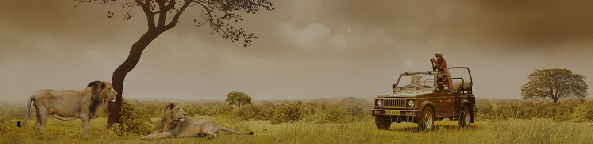

Devalia Safari
Devalia Safari Park Type Timing:
| Vehicle Type |
Particulars |
Morning Timing |
Evening Timing |
| Bus |
Monday To Sunday |
7:30 AM To 11 AM |
3 PM To 6 PM |
| Gypsy |
Monday To Sunday |
7 AM To 7:55 AM |
3 PM To 3:55 PM |
| Gypsy |
Monday To Sunday |
8 AM To 8:55 AM |
4 PM To 4:55 PM |
| Gypsy |
Monday To Sunday |
9 AM To 9:55 AM |
5 PM To 5:55 PM |
| Gypsy |
Monday To Sunday |
10 AM To 10:55 AM |
------- |
In order to reduce human interference in the main area of Gir National Park, and facilitate tourists to better
understand the importance of Gir and its varied wildlife, an interpretation zone has been developed at Devalia.
It comprised of 412 hectare of chain-link fenced area which represents GIr in a short, including all habitat
types and all major wildlife present in the main sanctuary area. The basic idea behind creating this facility is
to offer an opportunity to view lions and other wildlife species in their natural habitat in a short and
pressure on main sanctuary area will get reduced. This interpretation zone has healthy population of prey base
in the form of Sambars, Chinkaras, Wild Boars, Blue Bulls and Spotted Deer. This fenced area is treat to the
eyes for a wildlife enthusiasts.